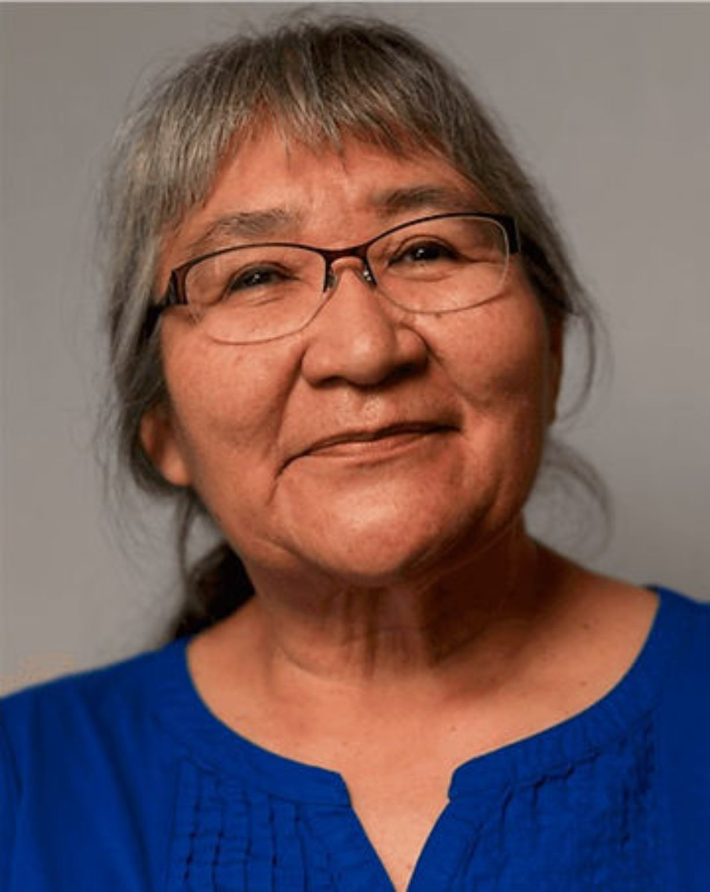

Elder Mary Jane Johnson (Gùdia)on bringing different strengths and knowledge together

Mary Jane is a Lhu’ààn Mân Ku Dań Elder from Kluane First Nation. She contributes to Braiding Knowledges Canada through her involvement in the Research Management Committee and Canadian Advisory Committee.
“Collaborative work means you and I decide together how we're going to move forward. We look at the strengths of each other, we look at the strengths of each other. […] Two of us together, we put our knowledge together. We have different kind of skill sets, different way of looking at resources.”
Sample audio for demonstration purposes.